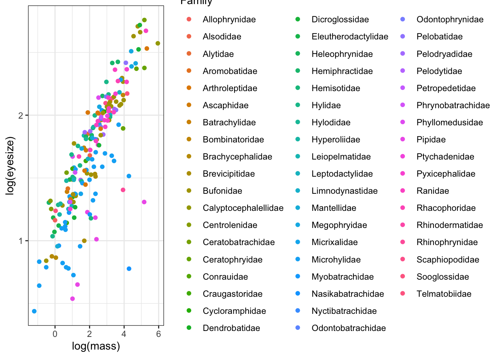
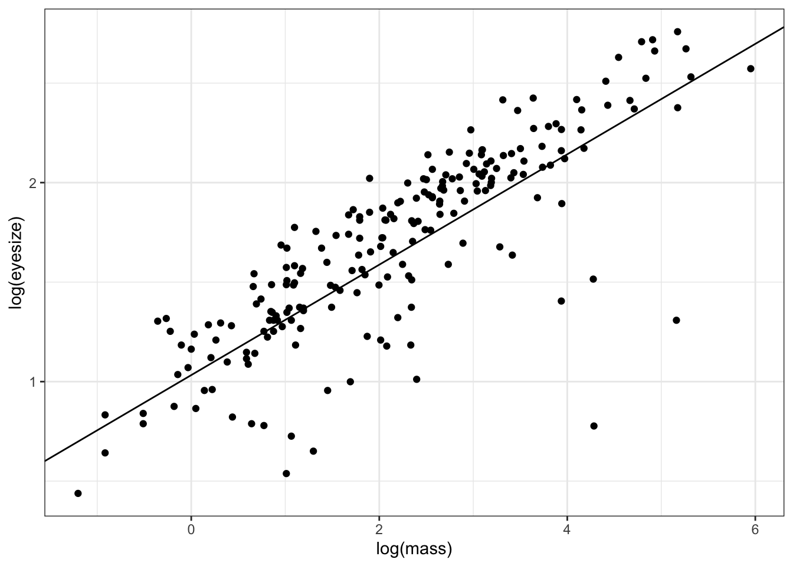
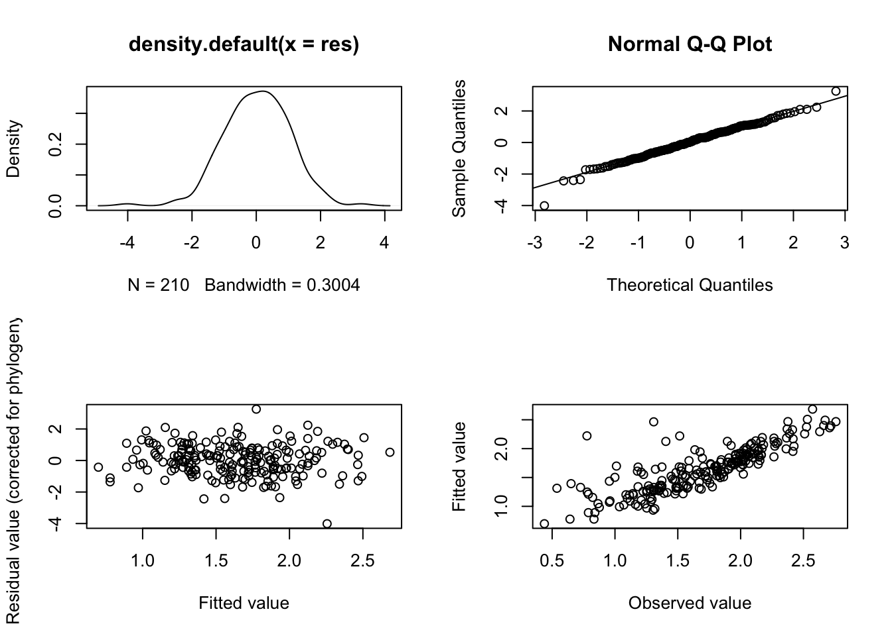
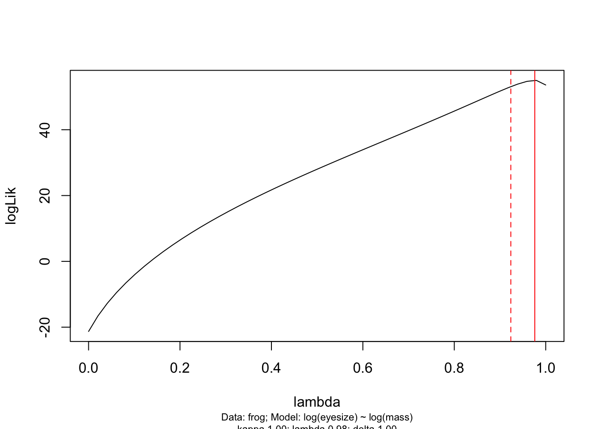
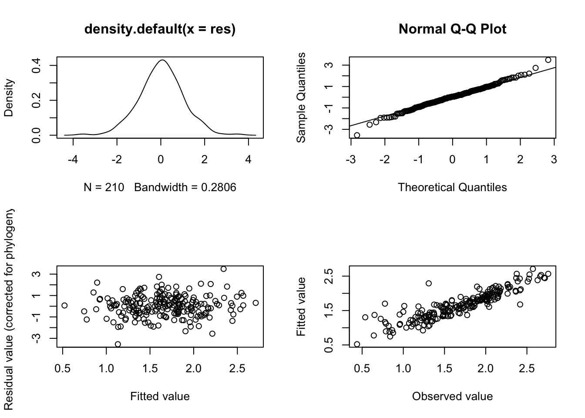
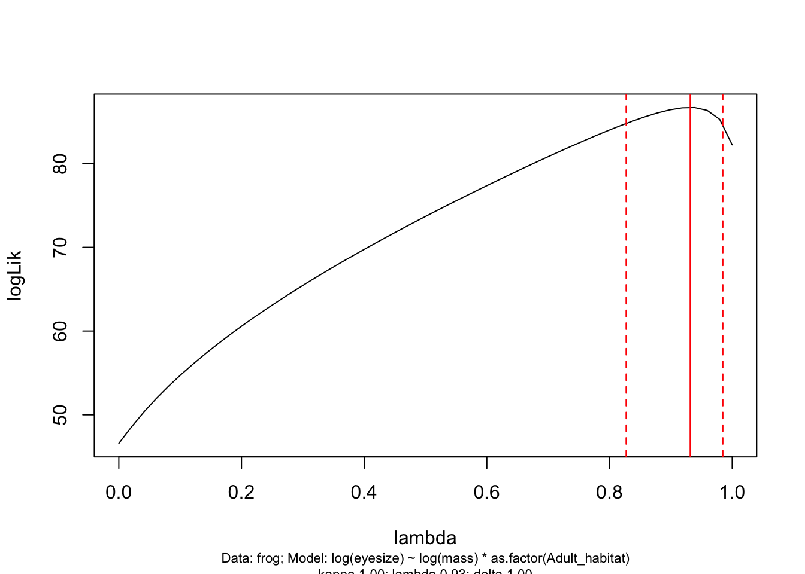
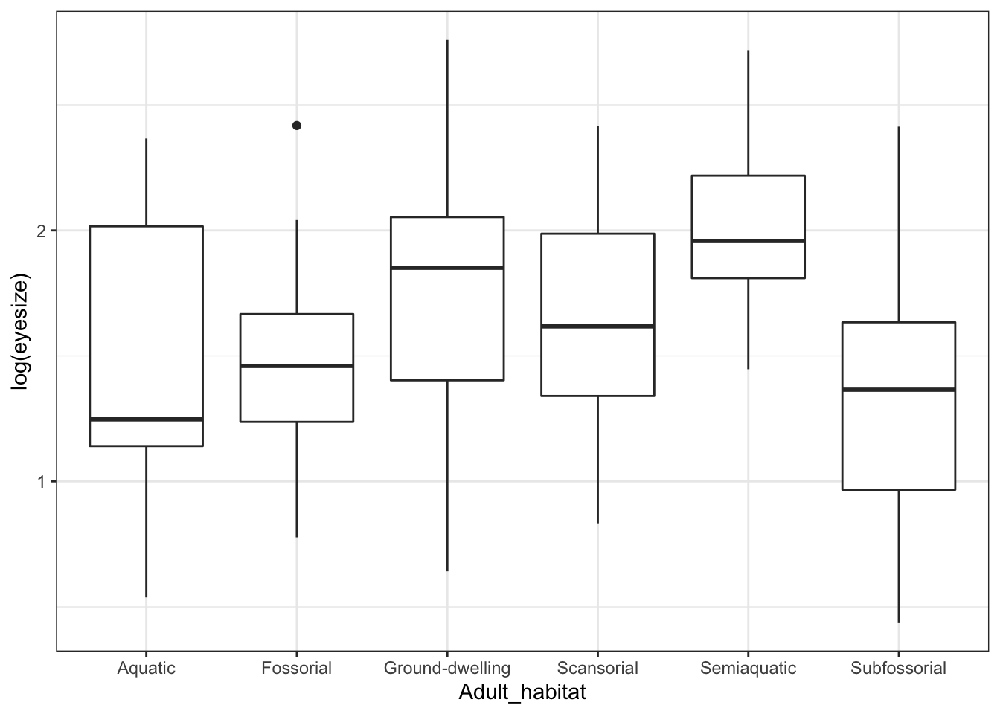
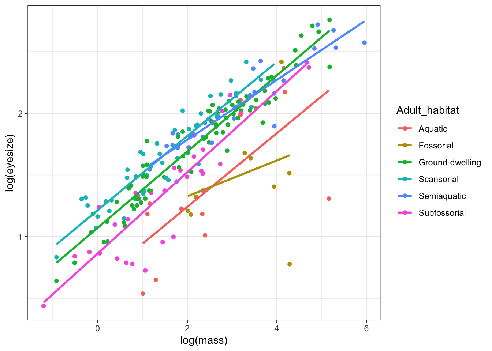

Chapter 6 Phylogenetic Generalised Least Squares (PGLS) in R
The aims of this exercise are to learn how to use R to perform Phylogenetic Generalised Least Squares (PGLS) analyses.
We will be using the evolution of eye size in frogs as an example. The data and modified tree come from Thomas et al. (2020), and the original tree comes from Feng et al. (2017). I’ve removed a few species and a few variables to make things a bit more straightforward. If you want to see the full results check out Thomas et al. (2020)!
6.1 Before you start
- Open the
06-PGLS.RProjfile in the06-PGLSfolder to open your R Project for this exercise. - Make yourself a new R script for your code.
You will also need to install the following packages:
apegeigertreeplyrcapertidyverse
6.2 Preparation
To begin we need to load the packages for this practical.
# Load the packages
library(ape)
library(geiger)
library(treeplyr)
library(caper)
library(tidyverse)Next we need to prepare the tree and data for the analyses. In the 04-Preparation exercise we read in our tree and data, checked them, and matched them so only species in both were retained. Please refer to that exercise for more details on how and why we do these things, or run through it now if you haven’t previously.
It is important to do these things before beginning a phylogenetic comparative analysis, so let’s run through that code again here.
# Read in the data
frogdata <- read_csv("data/frog-eyes.csv")
# Check everything loaded corrected
glimpse(frogdata)## Rows: 215
## Columns: 11
## $ Binomial <chr> "Allophryne_ruthveni", "Eupsophus_roseus", "Aly…
## $ Family <chr> "Allophrynidae", "Alsodidae", "Alytidae", "Alyt…
## $ Genus <chr> "Allophryne", "Eupsophus", "Alytes", "Discoglos…
## $ tiplabel <chr> "Allophryne_ruthveni_Allophrynidae", "Eupsophus…
## $ Adult_habitat <chr> "Scansorial", "Ground-dwelling", "Ground-dwelli…
## $ Life_history <chr> "Free-living larvae", "Free-living larvae", "Fr…
## $ Sex_dichromatism <chr> "Absent", "Absent", "Absent", "Absent", "Absent…
## $ SVL <dbl> 23.76667, 38.37500, 37.46667, 62.64000, 25.6000…
## $ mass <dbl> 1.0000000, 7.5000000, 6.6666667, 24.4000000, 2.…
## $ rootmass <dbl> 0.9917748, 1.9273451, 1.8690601, 2.8885465, 1.2…
## $ eyesize <dbl> 3.200000, 5.362500, 6.366667, 7.550000, 4.11666…To load the tree we will use read.nexus.
# Read in the tree
frogtree <- read.nexus("data/frog-tree.nex")
# Check it loaded correctly
str(frogtree)## List of 4
## $ edge : int [1:426, 1:2] 215 216 217 218 219 220 221 222 223 224 ...
## $ edge.length: num [1:426] 0.166 0.114 0.102 0.4 0.133 ...
## $ Nnode : int 213
## $ tip.label : chr [1:214] "Ascaphus_truei_Ascaphidae" "Leiopelma_hochstetteri_Leiopelmatidae" "Alytes_obstetricans_Alytidae" "Discoglossus_pictus_Alytidae" ...
## - attr(*, "class")= chr "phylo"
## - attr(*, "order")= chr "cladewise"Remember to check the tree is dichotomous, i.e. has no polytomies, rooted, and ultrametric.
## [1] TRUE## [1] TRUE## [1] TRUENext check that the species names match up in the tree and the data. This should reveal any typos and/or taxonomic differences that need to be fixed before going any further.
# Check whether the names match in the data and the tree
check <- name.check(phy = frogtree, data = frogdata,
data.names = frogdata$tiplabel)
# Look at check
check## $tree_not_data
## [1] "Incilius_nebulifer_Bufonidae"
## [2] "Leptobrachella_bidoupensis_Megophryidae"
## [3] "Microhyla_fissipes_Microhylidae"
## [4] "Microhyla_marmorata_Microhylidae"
##
## $data_not_tree
## [1] "Gastrophryne_carolinensis_Microhylidae"
## [2] "Leptobrachella_dringi_Megophryidae"
## [3] "Megophrys_gerti_Megophryidae"
## [4] "Microhyla_pulverata_Microhylidae"
## [5] "Oreobates_quixensis_Strabomantidae"Here all the excluded species are excluded because they are genuinely missing, not because of any typos, so we can move on.
Next we combine the tree and data to exclude species that are not in both, using the treeplyr function make.treedata.
# Combine and match the tree and data
frogstuff <- make.treedata(tree = frogtree, data = frogdata,
name_column = "tiplabel")
# Look at the tree
frogstuff$phy##
## Phylogenetic tree with 210 tips and 209 internal nodes.
##
## Tip labels:
## Ascaphus_truei_Ascaphidae, Leiopelma_hochstetteri_Leiopelmatidae, Alytes_obstetricans_Alytidae, Discoglossus_pictus_Alytidae, Barbourula_busuangensis_Bombinatoridae, Bombina_orientalis_Bombinatoridae, ...
##
## Rooted; includes branch lengths.## Rows: 210
## Columns: 10
## $ Binomial <fct> Ascaphus_truei, Leiopelma_hochstetteri, Alytes_…
## $ Family <fct> Ascaphidae, Leiopelmatidae, Alytidae, Alytidae,…
## $ Genus <fct> Ascaphus, Leiopelma, Alytes, Discoglossus, Barb…
## $ Adult_habitat <fct> Semiaquatic, Semiaquatic, Ground-dwelling, Grou…
## $ Life_history <fct> Free-living larvae, Free-living larvae, Free-li…
## $ Sex_dichromatism <fct> Absent, Absent, Absent, Absent, Absent, Absent,…
## $ SVL <dbl> 38.95000, 38.96667, 37.46667, 62.64000, 59.4750…
## $ mass <dbl> 6.000000, 5.333333, 6.666667, 24.400000, 24.250…
## $ rootmass <dbl> 1.809268, 1.740547, 1.869060, 2.888547, 2.73310…
## $ eyesize <dbl> 5.587500, 6.283333, 6.366667, 7.550000, 8.23750…Then we replace the removed species names column, and save the data as a data frame for later analyses.
# Make a new column called tiplabel with the tip labels in it
frogstuff$dat$tiplabel <- frogstuff$phy$tip.label
# Force mydata to be a data frame
mydata <- as.data.frame(frogstuff$dat)Finally we save the tree:
Note that is is possible to use the make.treedata object directly to run some analyses, but we have saved these separately here as many PCMs cannot work with this.
Now we’re ready to run our analyses!
6.3 Phylogenetic generalized least squares models (PGLS)
Much of the information below assumes that you are familiar with fitting and interpreting linear models (regressions, ANOVA, ANCOVA) in R using the function lm. If you aren’t I recommend taking a quick break to refamiliarise yourself with these models. It will make things much clearer. Even if you have never done these in R before, you should at least be familiar with the models, their assumptions and the kinds of results you might expect.
Let’s investigate the relationship between eye size in frogs and their body size. Theory leads us to believe that bigger animals will have bigger eyes, but is this true in frogs?
We can first quickly look at the phylogenetic non-independence/pseudoreplication on the graph by colouring the points by family.
# Plot eyesize against body mass, coloured by family
ggplot(mydata, aes(x = log(mass),
y = log(eyesize),
colour = Family)) +
geom_point() +
theme_bw()
This is a bit messy because there are a lot of families, but note how certain families are clustered on the graph. It’s clear that close relatives are more similar than distant relatives. So we need to account for phylogenetic non-independence, both because of the statistical issues caused by this and because it’s a better way to model the biological reality of our question. We know frog species evolve from other frog species, and that close relatives will therefore be similar, so we should add this into our models.
There are several ways of accounting for phylogenetic non-independence in your analyses. Here we will use phylogenetic generalized least squares (PGLS). Another popular earlier method is independent contrasts (PIC). This method is really similar to PGLS, in fact it is just a special kind of PGLS where \(\lambda\) is equal to 1.
PGLS offers some important advantages over independent contrasts. The model of trait evolution can be more flexible i.e., it can depart from a strict Brownian motion process (\(\lambda\) or K = 1). Different scaling parameters (\(\lambda\), \(\kappa\), and \(\delta\)) can be incorporated in the analysis, which can significantly improve the fit of the data to the model and thus also improve the estimation of the trait correlation. Another advantage of PGLS is that the intercept of the regression is not forced to be zero. See the Primer for more details on the theory underlying PICs and PGLS.
6.3.1 Fitting PGLS models in R
To perform PGLS models in R, caper requires you to first combine the phylogeny and data into one object using the function comparative.data. This is similar to what we did with make.treedata, but it does some stuff that is particular to how caper works so we still need to do this here.
Note that vcv = TRUE stores a variance covariance matrix of your tree (you will need this for the pgls function). na.omit = FALSE stops the function from removing species without data for all variables. warn.dropped = TRUE will tell you if any species are not in both the tree and the data and are therefore dropped from the comparative data object. Here we won’t drop any species because we already did this using make.treedata.
frog <- comparative.data(phy = mytree, data = mydata,
names.col = tiplabel, vcv = TRUE,
na.omit = FALSE, warn.dropped = TRUE)If you do need to drop species, this function will give a warning telling you that some species have been dropped. You can view the dropped species using:
## character(0)## character(0)
Always make sure you check the list of dropped species is what you expected, it often reveals typos in your species names, or mismatches in taxonomies used etc. Here we already fixed this problem, so nothing is listed. See the 04-Preparation chapter for more details.
The function for PGLS analyses in caper is pgls. To fit a model which uses the Maximum Likelihood (ML) estimate of \(\lambda\) we use the following code:
To look at the output we use anova (in the same way as we would when fitting a model using lm):
## Analysis of Variance Table
## Sequential SS for pgls: lambda = 0.98, delta = 1.00, kappa = 1.00
##
## Response: log(eyesize)
## Df Sum Sq Mean Sq F value Pr(>F)
## log(mass) 1 58.595 58.595 906.82 < 2.2e-16 ***
## Residuals 208 13.440 0.065
## ---
## Signif. codes: 0 '***' 0.001 '**' 0.01 '*' 0.05 '.' 0.1 ' ' 1It’s always good to look at the output using anova first. This uses sequential sum of squares to tell you whether a model including your predictor variable(s) is a better fit than a model without your predictor variable(s). For a complex model with lots of predictors this is the easiest way to find out the answer to the question you were asking (this will become more obvious in the next example using two predictor variables).
Here we asked “is there a significant effect of log(mass) on log(eyesize)?”. The answer is YES, there is a significant effect of log(mass) on log(eyesize). If we were reporting this result in a report/thesis/paper we would do it as follows:
There was a significant effect of mass on eyesize (PGLS: F = 906.82, df = 1,208, p < 0.001, \(\lambda\) = 0.98).
This is exactly how you would report the output of any non-phylogenetic linear model, except we also include the \(\lambda\) value when reporting the PGLS results.
We might also be interested in the model coefficients, i.e. the intercept and slope. To do this, just like we do for lm, we use summary:
##
## Call:
## pgls(formula = log(eyesize) ~ log(mass), data = frog, lambda = "ML")
##
## Residuals:
## Min 1Q Median 3Q Max
## -1.01708 -0.15412 0.00854 0.17623 0.82580
##
## Branch length transformations:
##
## kappa [Fix] : 1.000
## lambda [ ML] : 0.976
## lower bound : 0.000, p = < 2.22e-16
## upper bound : 1.000, p = 0.092889
## 95.0% CI : (0.924, NA)
## delta [Fix] : 1.000
##
## Coefficients:
## Estimate Std. Error t value Pr(>|t|)
## (Intercept) 1.0327690 0.1472023 7.016 3.157e-11 ***
## log(mass) 0.2774303 0.0092128 30.113 < 2.2e-16 ***
## ---
## Signif. codes: 0 '***' 0.001 '**' 0.01 '*' 0.05 '.' 0.1 ' ' 1
##
## Residual standard error: 0.2542 on 208 degrees of freedom
## Multiple R-squared: 0.8134, Adjusted R-squared: 0.8125
## F-statistic: 906.8 on 1 and 208 DF, p-value: < 2.2e-16We’d report this in a paper/report/thesis as:
There was a significant positive relationship between mass and eyesize (PGLS: slope \(\pm\) SE = 0.277 \(\pm\) 0.009, t = 30.113, df = 208, p < 0.001, \(\lambda\) = 0.976).
Again this is exactly the same as we would do for lm without the phylogenetic component, except we also include the \(\lambda\) value when reporting the PGLS results.
Note that as well as the standard regression outputs, the summary output includes the estimated ML value of \(\lambda\) (0.976) and p values from likelihood ratio tests showing whether the ML \(\lambda\) is significantly different from 0 or 1.
You may have also noticed \(\kappa\) and \(\delta\) in the PGLS output. \(\kappa\) and \(\delta\) are also tree transformations which can improve the fit of the data to the tree. It is possible to use pgls to optimise \(\kappa\) or \(\delta\) (using kappa = “ML” or delta = “ML” instead of lambda = “ML” in the code above). We will not cover this here. Optimizing more than one of these parameters at the same time is not advisable because it would be impossible to interpret the results!
We can also plot the results as follows:
ggplot(mydata, aes(x = log(mass),
y = log(eyesize))) +
geom_point() +
geom_abline(slope = coefficients(model.pgls)[2],
intercept = coefficients(model.pgls)[1]) +
theme_bw()
Note that coefficients(model.pgls) gives us the intercept coefficients(model.pgls)[2], and slope coefficients(model.pgls)[2] of the line, allowing us to use geom_abline to fit the line.
## (Intercept) log(mass)
## 1.0327690 0.27743036.3.2 Model diagnostics for PGLS models
You must always check model diagnostic plots whenever you fit a model in R to check that your data meet the assumptions of the model. Ideally you should do this BEFORE looking at anova or summary as if your assumptions are not met, then the model is useless and needs to be modified before you can use it to extract p values etc.
The method for getting model diagnostics for PGLS is the same for linear models, independent contrasts and PGLS models (though the graphs are slightly different) - we just use the function plot.
You might recall we also use plot to plot phylogenies and other things. plot is one of a set of clever functions in R that uses an ifelse statement to decide what kind of plot it should do. When you ask R to plot something, it first determines what class of object it is. It then chooses the correct version of plot for that class. In this case the function it is actually using to plot the model diagnostics for PGLS is plot.pgls. You might also have spotted that anova and summary work in the same way…
To get model diagnostic plots for PGLS:
# First make a plotting window with four panes as there are four plots
par(mfrow = c(2, 2))
# Now plot the model diagnostics
plot(model.pgls)
If you’ve no idea what these diagnostic plots are for I suggest reading up on this. Getting Started With R is a good place to start, but plots 2 and 3 at least should have been covered in whatever standard statistics course you’ve taken previously. In brief:
In plot 1 (upper left-hand plot) you should not see any data with a studentized residual > \(\pm\) 3. Any species with such large residuals may overly influence the results of the regression. Often these are the result of measurement error associated with species pairs joined by very short branches. You should report results with and without these outliers included, to see how much of an impact they have on your results.
In plot 2 (upper right-hand plot), the Normal Q-Q plot, the points should approximately fall on the line. This tests for normality of residuals, one of the assumptions of linear models. Note that Q-Q plots often look a bit messy, but unless you plan to use your PGLS model to predict values for your response variable outside of the range of the predictors used in your model (i.e. if you fitted a model of mass vs eyesize with mass ranging from 1g to 100g and then you wanted to use the model to predict eyesize when mass was 1000g) it isn’t too much of a problem. The other diagnostic plots are much more important.
In plot 3 (lower left-hand plot), the Fitted versus Residuals plot, we hope to see a fairly random scattering of points, often referred to as a sky at night distribution. This diagnostic plot is related to the systematic component of the model - any pattern here (e.g. strong positive or negative slopes, or humped or U-shaped patterns) suggests that the model has not been correctly specified. This might reflect a missing variable or interaction term, or that you need to transform your variables. Or that you need a different kind of model entirely.
In plot 4 (lower right-hand plot), the Fitted versus Observed plot, we should see a correlation among the observed values and fitted values in the model. This will vary depending on how good the model fit is.
It takes practice to know what is “good”, “bad” and “acceptable” with these plots. Here I would say the plots above are fine.
6.3.3 Likelihood profiles for \(\lambda\) in PGLS models
You should also look at the likelihood profiles for branch length transformations in PGLS models using pgls.profile:
# Create a likelihood profile of the lambda estimate
lambda.profile <- pgls.profile(model.pgls, "lambda")
# Plot the likelihood profile
plot(lambda.profile)
This graph shows the likelihood profile of \(\lambda\) in our model. Ideally you want a line with an obvious peak/optimum, rather than a flat line which would suggest \(\lambda\) could be anything. You can see that the optimum (the peak of the curve) is at 0.976 as estimated in our PGLS model. The dotted red lines are the 95% confidence intervals on \(\lambda\) for our model. pgls.confint prints out these numbers in $ci.val if you want to know the exact numbers.
## [1] 0.9237133 NANote that because our \(\lambda\) value is so close to 1, and this is the upper bound for \(\lambda\) in a PGLS model, the upper confidence interval is NA. If you needed to report the upper and lower confidence intervals (and this is good practice if they cover a large range of numbers), you could report the upper confidence interval here as 1. If the opposite situation occurred for a \(\lambda\) close to 0, you would use the lower confidence interval of 0.
6.3.4 A PGLS example with more than one predictor variable
In reality we are often interested in fitting models with more than one predictor variable. In the case of our frog eye size example, we’ve shown that smaller frogs have smaller eyes than larger frogs, but we imagine that the habitat the frogs live in might also influence eye size. For example, frogs living underground might have smaller eyes for their body size compared to frogs living in trees because they don’t use their eyes as much (see (???) to see whether this is indeed the case!).
We can fit a more complex model to test whether eye size is correlated with both mass and adult habitat as follows:
# Fit a PGLS model
model.pgls2 <- pgls(log(eyesize) ~ log(mass) * as.factor(Adult_habitat),
data = frog, lambda = "ML")It may help some of you if I tell you this is a phylogenetic version of an ANCOVA (analysis of covariance), whereas our first example was a regression. Both are linear models.
Two things to note.
First, as with lm in R, * means fit each predictor as a main effect AND include the interaction between them too. log(mass) * as.factor(Adult_habitat) is actually shorthand for typing log(mass) + as.factor(Adult_habitat) + log(mass):as.factor(Adult_habitat). log(mass):as.factor(Adult_habitat) is the interaction between mass and habitat, shown with the :.
Second, I’ve added as.factor in front of Adult_habitat. This is to get R to treat this variable as a factor with levels, rather than as either a numeric variable, or as character data. Here it is not strictly needed as R already thinks Adult_habitat is a factor, but it’s a good idea to make sure.
Now we’ve fitted the model, we need to check the model diagnostic plots. If these are unsuitable then we need to rethink how we fit the model.
# First make a plotting window with four panes as there are four plots
par(mfrow = c(2, 2))
# Now plot the model diagnostics
plot(model.pgls2)
And let’s check out the lambda profile too.
# Create a likelihood profile of the lambda estimate
lambda.profile <- pgls.profile(model.pgls2, "lambda")
# Plot the likelihood profile
plot(lambda.profile)
These all look fine so we can move on…
Let’s look at the anova outputs.
## Analysis of Variance Table
## Sequential SS for pgls: lambda = 0.93, delta = 1.00, kappa = 1.00
##
## Response: log(eyesize)
## Df Sum Sq Mean Sq F value Pr(>F)
## log(mass) 1 44.771 44.771 1084.2494 < 2.2e-16
## as.factor(Adult_habitat) 5 2.436 0.487 11.8005 5.335e-10
## log(mass):as.factor(Adult_habitat) 5 0.604 0.121 2.9275 0.01422
## Residuals 198 8.176 0.041
##
## log(mass) ***
## as.factor(Adult_habitat) ***
## log(mass):as.factor(Adult_habitat) *
## Residuals
## ---
## Signif. codes: 0 '***' 0.001 '**' 0.01 '*' 0.05 '.' 0.1 ' ' 1OK great, this output is fairly easy to read (compared to the summary which we will look at in a bit!). The first row, labelled log(mass) tells us that the main effect of log(mass) is significant (p < 0.001), i.e. log(mass) is significantly correlated with log(eyesize). It doesn’t tell us anything about direction (positive or negative) of the correlation, but we can do a quick plot to work this out:
The plot clearly shows that as body size increases so does eye size (we already knew this from our first model above).
The second row, labelled as.factor(Adult_habitat) tells us that the main effect of Adult habitat is also significant (p < 0.001), i.e. Adult_habitat is significantly correlated with log(eyesize). Again we can do a quick plot to work to see which habitats are different…

Eye size is smallest, on average, in fossorial (burrowing) frogs. That fits with what we know about burrowing animals - they tend to have reduced eyes (think of moles!).
Finally the last row labelled log(mass):as.factor(Adult_habitat) tells us that the interaction between mass and habitat is significant (p = 0.014). This means that the relationship (i.e. the slope in a plot) between log(mass) and log(eyesize) varies in relation to Adult_habitat. We can look at this with another quick plot.
ggplot(mydata, aes(x = log(mass), y = log(eyesize), colour = Adult_habitat)) +
geom_point() +
geom_smooth(method = 'lm', se = FALSE, formula = 'y ~ x') +
theme_bw() We can see that the slope for fossorial (burrowing) species is shallower than for other species, suggesting that eye size increases more slowly with increasing mass in that group.
I used geom_smooth(method = ‘lm’, se = FALSE) in the code above to get a quick idea of what the slopes look like using an lm. These slopes won’t be exactly the same in the PGLS model, but it gives us an idea of what is going on. Do not use geom_smooth to draw regression lines in your reports/papers/thesis. The function is for data exploration only and does not give the correct slope/confidence interval unless your models is very simple. We can get the correct intercepts and slopes for each of these lines using the summary function and our PGLS model, see below.
I showed you the plots and anova output first because, as you’ll see below, summary outputs get complicated fast!
##
## Call:
## pgls(formula = log(eyesize) ~ log(mass) * as.factor(Adult_habitat),
## data = frog, lambda = "ML")
##
## Residuals:
## Min 1Q Median 3Q Max
## -0.70184 -0.11053 0.01051 0.13012 0.68947
##
## Branch length transformations:
##
## kappa [Fix] : 1.000
## lambda [ ML] : 0.931
## lower bound : 0.000, p = < 2.22e-16
## upper bound : 1.000, p = 0.0027911
## 95.0% CI : (0.827, 0.985)
## delta [Fix] : 1.000
##
## Coefficients:
## Estimate Std. Error
## (Intercept) 1.063339 0.168677
## log(mass) 0.237742 0.037012
## as.factor(Adult_habitat)Fossorial 0.108237 0.245771
## as.factor(Adult_habitat)Ground-dwelling -0.018248 0.136761
## as.factor(Adult_habitat)Scansorial 0.081581 0.139220
## as.factor(Adult_habitat)Semiaquatic 0.123482 0.147832
## as.factor(Adult_habitat)Subfossorial -0.150782 0.139996
## log(mass):as.factor(Adult_habitat)Fossorial -0.114428 0.073321
## log(mass):as.factor(Adult_habitat)Ground-dwelling 0.056417 0.039114
## log(mass):as.factor(Adult_habitat)Scansorial 0.047165 0.042531
## log(mass):as.factor(Adult_habitat)Semiaquatic 0.018215 0.042324
## log(mass):as.factor(Adult_habitat)Subfossorial 0.087142 0.042066
## t value Pr(>|t|)
## (Intercept) 6.3040 1.849e-09 ***
## log(mass) 6.4234 9.696e-10 ***
## as.factor(Adult_habitat)Fossorial 0.4404 0.6601
## as.factor(Adult_habitat)Ground-dwelling -0.1334 0.8940
## as.factor(Adult_habitat)Scansorial 0.5860 0.5586
## as.factor(Adult_habitat)Semiaquatic 0.8353 0.4046
## as.factor(Adult_habitat)Subfossorial -1.0770 0.2828
## log(mass):as.factor(Adult_habitat)Fossorial -1.5606 0.1202
## log(mass):as.factor(Adult_habitat)Ground-dwelling 1.4424 0.1508
## log(mass):as.factor(Adult_habitat)Scansorial 1.1090 0.2688
## log(mass):as.factor(Adult_habitat)Semiaquatic 0.4304 0.6674
## log(mass):as.factor(Adult_habitat)Subfossorial 2.0715 0.0396 *
## ---
## Signif. codes: 0 '***' 0.001 '**' 0.01 '*' 0.05 '.' 0.1 ' ' 1
##
## Residual standard error: 0.2032 on 198 degrees of freedom
## Multiple R-squared: 0.854, Adjusted R-squared: 0.8459
## F-statistic: 105.3 on 11 and 198 DF, p-value: < 2.2e-16If you’re unfamiliar with these kinds of outputs it’s worth taking this slowly. Note that this is exactly the same as interpreting the output of a non-phylogenetic ANCOVA fitted using lm.
The first row, labelled (Intercept), gives the intercept for the Adult_habitat that is first alphabetically. The row labelled log(mass) is the slope for the Adult_habitat that is first alphabetically. In this case that’s the Aquatic habitat (if you scroll back up to the figure with the different slopes you’ll see that it’s the first alphabetically, and also because of this it’s the only one not labelled in the output above).
All of the other intercepts and slopes are treatment contrasts. Rather than the intercepts and slopes themselves, R reports the difference between the Adult_habitat in question and the Aquatic habitat (the first alphabetically).
So the intercept for the fossorial frogs (as.factor(Adult_habitat)Fossorial) is…
## [1] 1.171576And the slope for the fossorial frogs (log(mass):as.factor(Adult_habitat)Fossorial) is…
## [1] 0.123314In some cases the exact numbers in the summary table will be important, but in most cases I’d report the results from a model like this using just the anova output, plus a nice figure that shows the information in the summary output much more clearly than copying out all these numbers. I might report these results like this (or if I had lots of models I would put the figures into a table).
Mass, adult habitat and the interaction between them, were all significantly correlated with eye size (PGLS: \(\lambda\) = 0.976; mass: F = 1084, df = 1, 198, p < 0.001; habitat: F = 11.80, df = 5,198, p < 0.001; interaction: F = 2.938, df = 5,198, p = 0.014; Figure 3).
6.4 Common issues when running PGLS models in R
My example data are designed to work easily, but when you use your own data you may come across a couple of common errors. I therefore list these below.
6.4.1 Optim errors
Sometimes you will find that pgls will not work and you get an optim error. This generally happens when the lambda profile is really flat, and the model is getting stuck near one of the bounds.
To fix this error you need to change the bounds (i.e. upper and lower values) on the parameter being optimized, in this case \(\lambda\). It usually seems to be the lower bound which is the issue. Just change the lower bound of \(\lambda\) to something a little bigger than 1e-6 (the default lower bound) until it works. For example:
6.4.2 Big problems with small datasets
You will often find strange \(\lambda\) profiles when you don’t have a lot of species in your data, because \(\lambda\) has very low power to detect phylogenetic signal for less than 20-30 data points (Freckleton, Harvey, and Pagel 2002). This means that using PGLS on small datasets is tricky - you almost always get ML \(\lambda\) of zero but the \(\lambda\) profile will show a pretty flat likelihood surface. Unfortunately people often forget to look at the \(\lambda\) profile so erroneously conclude that there is no phylogenetic autocorrelation in their data.
Generally I’d say don’t use small datasets, however, this seems unavoidable in some fields. Therefore my advice is to (only in this situation!) ignore one of Rob Freckleton’s deadly sins (Freckleton 2009) and report the results from a non-phylogenetic lm model (equivalent of PGLS with \(\lambda\) = 0) and also report the results from a PGLS model with \(\lambda\) set to 1 (equivalent to independent contrasts). This is not ideal but it’s the best solution at present if collecting more data is not an option.
To set \(\lambda\) to 1 you just replace “ML” with 1:
6.5 Summary
You should now know how to perform a PGLS analysis in R using the package caper.
6.6 Practical exercises
In the data folder there is another tree (primate-tree.nex) and dataset (primate-data.csv) for investigating the evolution of primate life-history variables. These data come from the PanTHERIA database (Jones et al. 2009) and 10kTrees (Arnold, Matthews, and Nunn 2010).
Let’s investigate the relationship between gestation length in Primates and their body size. Theory leads us to believe that bigger mammals have longer gestation lengths (compare mice to elephants), but is this true in Primates?
Read in the tree and data, then prepare them for a PCM analysis (you may have already done this in a previous exercise which should save you some time). Fit a PGLS model to investigate the relationship between log gestation length (y = log(GestationLen_d)) and log body size (x = log(AdultBodyMass_g)) in Primates (HINT: You may find this gives you an OPTIM error, see above. You can solve it using bounds = list(lambda = c(0.01, 1)) as shown in the section on optim errors above). Don’t forget to look at the model diagnostics! Then answer the following questions.
- What is the maximum likelihood estimate of \(\lambda\) in the model?
- What are the confidence intervals on the maximum likelihood estimate of \(\lambda\). How would you interpret these?
- Plot the \(\lambda\) profile for the the maximum likelihood estimate of \(\lambda\). What does it look like?
- Is there a significant relationship between log gestation length and log body size? What is the slope of this relationship?
References
Arnold, Christian, Luke J Matthews, and Charles L Nunn. 2010. “The 10kTrees Website: A New Online Resource for Primate Phylogeny.” Evolutionary Anthropology: Issues, News, and Reviews 19 (3): 114–18.
Feng, Yan-Jie, David C Blackburn, Dan Liang, David M Hillis, David B Wake, David C Cannatella, and Peng Zhang. 2017. “Phylogenomics Reveals Rapid, Simultaneous Diversification of Three Major Clades of Gondwanan Frogs at the Cretaceous–Paleogene Boundary.” Proceedings of the National Academy of Sciences 114 (29): E5864–E5870.
Freckleton, R P. 2009. “The Seven Deadly Sins of Comparative Analysis.” Journal of Evolutionary Biology 22 (7): 1367–75.
Freckleton, R P, P H Harvey, and M Pagel. 2002. “Phylogenetic Analysis and Comparative Data: A Test and Review of Evidence.” The American Naturalist 160 (6): 712–26.
Jones, Kate E, Jon Bielby, Marcel Cardillo, Susanne A Fritz, Justin O’Dell, C David L Orme, Kamran Safi, et al. 2009. “PanTHERIA: A Species-Level Database of Life History, Ecology, and Geography of Extant and Recently Extinct Mammals: Ecological Archives E090-184.” Ecology 90 (9): 2648–8.
Thomas, Kate N, David J Gower, Rayna C Bell, Matthew K Fujita, Ryan K Schott, and Jeffrey W Streicher. 2020. “Eye Size and Investment in Frogs and Toads Correlate with Adult Habitat, Activity Pattern and Breeding Ecology.” Proceedings of the Royal Society B 287 (1935): 20201393.